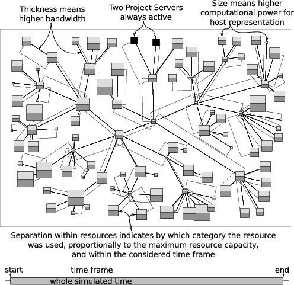
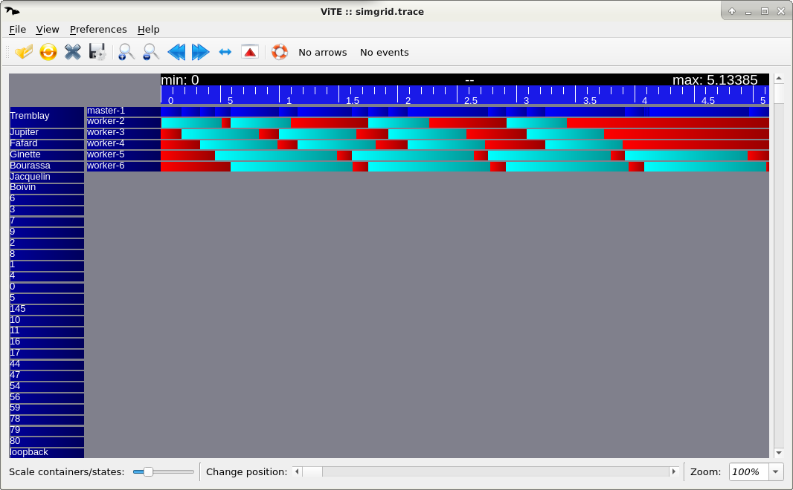
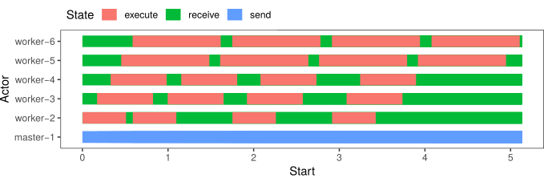

模拟分布式算法
SimGrid was conceived as a tool to study distributed algorithms. Its S4U interface makes it easy to assess Cloud, P2P, HPC, IoT, and other similar settings (more info).
A typical SimGrid simulation is composed of several Actors, that execute user-provided functions. The actors have to explicitly use the S4U interface to express their computation, communication, disk usage, and other Activities so that they get reflected within the simulator. These activities take place on Resources (Hosts, Links, Disks). SimGrid predicts the time taken by each activity and orchestrates accordingly the actors waiting for the completion of these activities.
Each actor executes a user-provided function on a simulated Host with which it can interact. Communications are not directly sent to actors, but posted onto a Mailbox that serves as a rendez-vous point between communicating actors.
In the remainder of this tutorial, you will discover a simple yet fully-functioning example of SimGrid simulation: the Master/Workers application. We will detail each part of the code and the necessary configuration to make it work. After this tour, several exercises are proposed to let you discover some of the SimGrid features, hands on the keyboard. This practical session will be given in C++ or Python, which you are supposed to know beforehand.
认识 Master/Workers
This section introduces an example of SimGrid simulation. This simple application is composed of two kinds of actors: the master is in charge of distributing some computational tasks to a set of workers that execute them.
The provided code dispatches these tasks in round-robin scheduling, i.e. in circular order: tasks are dispatched to each worker one after the other, until all tasks are dispatched. You will improve this scheme later in this tutorial.
Actor 代码
Let’s start with the code of the master. It is represented by the master function below. This simple function takes at least 3 parameters (the number of tasks to dispatch, their computational size in flops to compute, and their communication size in bytes to exchange). Every parameter after the third one must be the name of a host on which a worker is waiting for something to compute.
Then, the tasks are sent one after the other, each on a mailbox named after the worker’s hosts. On the other side, a given worker (which code is given below) waits for incoming tasks on its mailbox.
In the end, once all tasks are dispatched, the master dispatches another task per worker, but this time with a negative amount of flops to compute. Indeed, this application decided by convention, that the workers should stop when encountering such a negative compute_size.
At the end of the day, the only SimGrid specific functions used in this example are
simgrid::s4u::Mailbox::by_name()(to retrieve or create a mailbox) andsimgrid::s4u::Mailbox::put()(so send something over a mailbox). Also,XBT_INFOis used as a replacement toprintf()orstd::coutto ensure that the messages are nicely logged along with the simulated time and actor name.static void master(std::vector<std::string> args) { xbt_assert(args.size() > 4, "The master function expects at least 3 arguments"); long tasks_count = std::stol(args[1]); double compute_cost = std::stod(args[2]); long communication_cost = std::stol(args[3]); std::vector<sg4::Mailbox*> workers; for (unsigned int i = 4; i < args.size(); i++) workers.push_back(sg4::Mailbox::by_name(args[i])); XBT_INFO("Got %zu workers and %ld tasks to process", workers.size(), tasks_count); for (int i = 0; i < tasks_count; i++) { /* For each task to be executed: */ /* - Select a worker in a round-robin way */ sg4::Mailbox* mailbox = workers[i % workers.size()]; /* - Send the computation cost to that worker */ XBT_INFO("Sending task %d of %ld to mailbox '%s'", i, tasks_count, mailbox->get_cname()); mailbox->put(new double(compute_cost), communication_cost); } XBT_INFO("All tasks have been dispatched. Request all workers to stop."); for (unsigned int i = 0; i < workers.size(); i++) { /* The workers stop when receiving a negative compute_cost */ sg4::Mailbox* mailbox = workers[i % workers.size()]; mailbox->put(new double(-1.0), 0); } }At the end of the day, the only SimGrid specific functions used in this example are
simgrid.Mailbox.by_name()(to retrieve or create a mailbox) andsimgrid.Mailbox.put()(so send something over a mailbox). Also,simgrid.this_actor.info()is used as a replacement to print to ensure that the messages are nicely logged along with the simulated time and actor name.def master(*args): assert len(args) > 3, f"Actor master requires 3 parameters plus the workers' names, but got {len(args)}" tasks_count = int(args[0]) compute_cost = int(args[1]) communicate_cost = int(args[2]) workers = [] for i in range(3, len(args)): workers.append(Mailbox.by_name(args[i])) this_actor.info(f"Got {len(workers)} workers and {tasks_count} tasks to process") for i in range(tasks_count): # For each task to be executed: # - Select a worker in a round-robin way mailbox = workers[i % len(workers)] # - Send the computation amount to the worker if (tasks_count < 10000 or (tasks_count < 100000 and i % 10000 == 0) or i % 100000 == 0): this_actor.info(f"Sending task {i} of {tasks_count} to mailbox '{mailbox.name}'") mailbox.put(compute_cost, communicate_cost) this_actor.info("All tasks have been dispatched. Request all workers to stop.") for mailbox in workers: # The workers stop when receiving a negative compute_cost mailbox.put(-1, 0)
Then comes the code of the worker actors. This function expects no parameter from its vector of strings. Its code is very simple: it expects messages on the mailbox that is named after its host. As long as it gets valid computation requests (whose compute_amount is positive), it computes this task and waits for the next one.
The worker retrieves its own host with
simgrid::s4u::this_actor::get_host(). The
simgrid::s4u::this_actor
namespace contains many such helping functions.
static void worker(std::vector<std::string> args)
{
xbt_assert(args.size() == 1, "The worker expects no argument");
const sg4::Host* my_host = sg4::this_actor::get_host();
sg4::Mailbox* mailbox = sg4::Mailbox::by_name(my_host->get_name());
double compute_cost;
do {
auto msg = mailbox->get_unique<double>();
compute_cost = *msg;
if (compute_cost > 0) /* If compute_cost is valid, execute a computation of that cost */
sg4::this_actor::execute(compute_cost);
} while (compute_cost > 0); /* Stop when receiving an invalid compute_cost */
XBT_INFO("Exiting now.");
}
The worker retrieves its own host with simgrid.this_actor.get_host(). The
this_actor object contains many such helping functions.
def worker(*args):
assert not args, "The worker expects to not get any argument"
mailbox = Mailbox.by_name(this_actor.get_host().name)
done = False
while not done:
compute_cost = mailbox.get()
if compute_cost > 0: # If compute_cost is valid, execute a computation of that cost
this_actor.execute(compute_cost)
else: # Stop when receiving an invalid compute_cost
done = True
this_actor.info("Exiting now.")
启动模拟
And this is it. In only a few lines, we defined the algorithm of our master/workers example.
That being said, an algorithm alone is not enough to define a
simulation: SimGrid is a library, not a program. So you need to define
your own main() function as follows. This function is in charge of
creating a SimGrid simulation engine (on line 3), register the actor
functions to the engine (on lines 7 and 8), load the simulated platform
from its description file (on line 11), map actors onto that platform
(on line 12) and run the simulation until its completion on line 15.
1int main(int argc, char* argv[])
2{
3 sg4::Engine e(&argc, argv);
4 xbt_assert(argc > 2, "Usage: %s platform_file deployment_file\n", argv[0]);
5
6 /* Register the functions representing the actors */
7 e.register_function("master", &master);
8 e.register_function("worker", &worker);
9
10 /* Load the platform description and then deploy the application */
11 e.load_platform(argv[1]);
12 e.load_deployment(argv[2]);
13
14 /* Run the simulation */
15 e.run();
16
17 XBT_INFO("Simulation is over");
18
19 return 0;
20}
That being said, an algorithm alone is not enough to define a simulation: you need a main block to setup the simulation and its components as follows. This code creates a SimGrid simulation engine (on line 4), registers the actor functions to the engine (on lines 7 and 8), loads the simulated platform from its description file (on line 11), map actors onto that platform (on line 12) and run the simulation until its completion on line 15.
1if __name__ == '__main__':
2 assert len(sys.argv) > 2, "Usage: python app-masterworkers.py platform_file deployment_file"
3
4 e = Engine(sys.argv)
5
6 # Register the classes representing the actors
7 e.register_actor("master", master)
8 e.register_actor("worker", worker)
9
10 # Load the platform description and then deploy the application
11 e.load_platform(sys.argv[1])
12 e.load_deployment(sys.argv[2])
13
14 # Run the simulation
15 e.run()
16
17 this_actor.info("Simulation is over")
Finally, this example requires a platform file and a deployment file.
平台文件
Platform files define the simulated platform on which the provided application will take place. It contains one or several Network Zone that contains both Host and Link Resources, as well as routing information.
Such files can get rather long and boring, so the example below is
only an excerpt of the full examples/platforms/small_platform.xml
file. For example, most routing information is missing, and only the
route between the hosts Tremblay and Fafard is given. This path
traverses 6 links (named 4, 3, 2, 0, 1, and 8). There are several
examples of platforms in the archive under examples/platforms.
<?xml version='1.0'?>
<!DOCTYPE platform SYSTEM "https://simgrid.org/simgrid.dtd">
<platform version="4.1">
<zone id="zone0" routing="Full">
<host id="Tremblay" speed="98.095Mf"/>
<host id="Jupiter" speed="76.296Mf"/>
<host id="Fafard" speed="76.296Mf"/>
<host id="Ginette" speed="48.492Mf"/>
<host id="Bourassa" speed="48.492Mf"/>
<host id="Jacquelin" speed="137.333Mf"/>
<link id="6" bandwidth="41.279125MBps" latency="59.904us"/>
<link id="3" bandwidth="34.285625MBps" latency="514.433us"/>
<link id="7" bandwidth="11.618875MBps" latency="189.98us"/>
<link id="9" bandwidth="7.20975MBps" latency="1.461517ms"/>
<link id="2" bandwidth="118.6825MBps" latency="136.931us"/>
<link id="8" bandwidth="8.158MBps" latency="270.544us"/>
<link id="1" bandwidth="34.285625MBps" latency="514.433us"/>
<link id="4" bandwidth="10.099625MBps" latency="479.78us"/>
<link id="0" bandwidth="41.279125MBps" latency="59.904us"/>
<route src="Tremblay" dst="Fafard">
<link_ctn id="4"/>
<link_ctn id="3"/>
<link_ctn id="2"/>
<link_ctn id="0"/>
<link_ctn id="1"/>
<link_ctn id="8"/>
</route>
</zone>
</platform>
部署文件
Deployment files specify the execution scenario: it lists the actors that should be started, along with their parameters. In the following example, we start 6 actors: one master and 5 workers.
<?xml version='1.0'?>
<!DOCTYPE platform SYSTEM "https://simgrid.org/simgrid.dtd">
<platform version="4.1">
<!-- The master actor (with some arguments) -->
<actor host="Tremblay" function="master">
<argument value="20"/> <!-- Number of tasks -->
<argument value="50000000"/> <!-- Computation size of tasks -->
<argument value="1000000"/> <!-- Communication size of tasks -->
<!-- name of hosts on which the workers are running -->
<argument value="Tremblay"/>
<argument value="Jupiter" />
<argument value="Fafard" />
<argument value="Ginette" />
<argument value="Bourassa" />
</actor>
<!-- The worker actors (with no argument) -->
<actor host="Tremblay" function="worker" />
<actor host="Jupiter" function="worker" />
<actor host="Fafard" function="worker" />
<actor host="Ginette" function="worker" />
<actor host="Bourassa" function="worker" />
</platform>
执行示例
This time, we have all parts: once the program is compiled, we can execute it as follows.
Note how the XBT_INFO requests turned into informative messages.
$$$ ./masterworkers platform.xml deploy.xml
[ 0.000000] (master@Tremblay) Got 5 workers and 20 tasks to process
[ 0.000000] (master@Tremblay) Sending task 0 of 20 to mailbox 'Tremblay'
[ 0.002265] (master@Tremblay) Sending task 1 of 20 to mailbox 'Jupiter'
[ 0.171420] (master@Tremblay) Sending task 2 of 20 to mailbox 'Fafard'
[ 0.329817] (master@Tremblay) Sending task 3 of 20 to mailbox 'Ginette'
[ 0.453549] (master@Tremblay) Sending task 4 of 20 to mailbox 'Bourassa'
[ 0.586168] (master@Tremblay) Sending task 5 of 20 to mailbox 'Tremblay'
[ 0.588433] (master@Tremblay) Sending task 6 of 20 to mailbox 'Jupiter'
[ 0.995917] (master@Tremblay) Sending task 7 of 20 to mailbox 'Fafard'
[ 1.154314] (master@Tremblay) Sending task 8 of 20 to mailbox 'Ginette'
[ 1.608379] (master@Tremblay) Sending task 9 of 20 to mailbox 'Bourassa'
[ 1.749885] (master@Tremblay) Sending task 10 of 20 to mailbox 'Tremblay'
[ 1.752150] (master@Tremblay) Sending task 11 of 20 to mailbox 'Jupiter'
[ 1.921304] (master@Tremblay) Sending task 12 of 20 to mailbox 'Fafard'
[ 2.079701] (master@Tremblay) Sending task 13 of 20 to mailbox 'Ginette'
[ 2.763209] (master@Tremblay) Sending task 14 of 20 to mailbox 'Bourassa'
[ 2.913601] (master@Tremblay) Sending task 15 of 20 to mailbox 'Tremblay'
[ 2.915867] (master@Tremblay) Sending task 16 of 20 to mailbox 'Jupiter'
[ 3.085021] (master@Tremblay) Sending task 17 of 20 to mailbox 'Fafard'
[ 3.243418] (master@Tremblay) Sending task 18 of 20 to mailbox 'Ginette'
[ 3.918038] (master@Tremblay) Sending task 19 of 20 to mailbox 'Bourassa'
[ 4.077318] (master@Tremblay) All tasks have been dispatched. Request all workers to stop.
[ 4.077513] (worker@Tremblay) Exiting now.
[ 4.096528] (worker@Jupiter) Exiting now.
[ 4.122236] (worker@Fafard) Exiting now.
[ 4.965689] (worker@Ginette) Exiting now.
[ 5.133855] (maestro@) Simulation is over
[ 5.133855] (worker@Bourassa) Exiting now.
$$$
Note how the simgrid.this_actor.info() calls turned into informative messages.
$$$ python ./app-masterworkers.py platform.xml deploy.xml
[ 0.000000] (master@Tremblay) Got 5 workers and 20 tasks to process
[ 0.000000] (master@Tremblay) Sending task 0 of 20 to mailbox 'Tremblay'
[ 0.002265] (master@Tremblay) Sending task 1 of 20 to mailbox 'Jupiter'
[ 0.171420] (master@Tremblay) Sending task 2 of 20 to mailbox 'Fafard'
[ 0.329817] (master@Tremblay) Sending task 3 of 20 to mailbox 'Ginette'
[ 0.453549] (master@Tremblay) Sending task 4 of 20 to mailbox 'Bourassa'
[ 0.586168] (master@Tremblay) Sending task 5 of 20 to mailbox 'Tremblay'
[ 0.588433] (master@Tremblay) Sending task 6 of 20 to mailbox 'Jupiter'
[ 0.995917] (master@Tremblay) Sending task 7 of 20 to mailbox 'Fafard'
[ 1.154314] (master@Tremblay) Sending task 8 of 20 to mailbox 'Ginette'
[ 1.608379] (master@Tremblay) Sending task 9 of 20 to mailbox 'Bourassa'
[ 1.749885] (master@Tremblay) Sending task 10 of 20 to mailbox 'Tremblay'
[ 1.752150] (master@Tremblay) Sending task 11 of 20 to mailbox 'Jupiter'
[ 1.921304] (master@Tremblay) Sending task 12 of 20 to mailbox 'Fafard'
[ 2.079701] (master@Tremblay) Sending task 13 of 20 to mailbox 'Ginette'
[ 2.763209] (master@Tremblay) Sending task 14 of 20 to mailbox 'Bourassa'
[ 2.913601] (master@Tremblay) Sending task 15 of 20 to mailbox 'Tremblay'
[ 2.915867] (master@Tremblay) Sending task 16 of 20 to mailbox 'Jupiter'
[ 3.085021] (master@Tremblay) Sending task 17 of 20 to mailbox 'Fafard'
[ 3.243418] (master@Tremblay) Sending task 18 of 20 to mailbox 'Ginette'
[ 3.918038] (master@Tremblay) Sending task 19 of 20 to mailbox 'Bourassa'
[ 4.077318] (master@Tremblay) All tasks have been dispatched. Request all workers to stop.
[ 4.077513] (worker@Tremblay) Exiting now.
[ 4.096528] (worker@Jupiter) Exiting now.
[ 4.122236] (worker@Fafard) Exiting now.
[ 4.965689] (worker@Ginette) Exiting now.
[ 5.133855] (maestro@) Simulation is over
[ 5.133855] (worker@Bourassa) Exiting now.
$$$
Each example included in the SimGrid distribution comes with a tesh file that presents how to start the example once compiled, along with the expected output. These files are used for the automatic testing of the framework but can be used to see the examples’ output without compiling them. See e.g. the file examples/cpp/app-masterworkers/s4u-app-masterworkers.tesh. Lines starting with $ are the commands to execute; lines starting with > are the expected output of each command, while lines starting with ! are configuration items for the test runner.
自己动手改进
In this section, you will modify the example presented earlier to explore the quality of the proposed algorithm. It already works, and the simulation prints things, but the truth is that we have no idea of whether this is a good algorithm to dispatch tasks to the workers. This very simple setting raises many interesting questions:
Which algorithm should the master use? Or should the worker decide by themselves?
Round Robin is not an efficient algorithm when all tasks are not processed at the same speed. It would probably be more efficient if the workers were asking for tasks when ready.
Should tasks be grouped in batches or sent separately?
The workers will starve if they don’t get the tasks fast enough. One possibility to reduce latency would be to send tasks in pools instead of one by one. But if the pools are too big, the load balancing will likely get uneven, in particular when distributing the last tasks.
How does the quality of such an algorithm dependent on the platform characteristics and on the task characteristics?
Whenever the input communication time is very small compared to processing time and workers are homogeneous, it is likely that the round-robin algorithm performs very well. Would it still hold true when transfer time is not negligible? What if some tasks are performed faster on some specific nodes?
The network topology interconnecting the master and the workers may be quite complicated. How does such a topology impact the previous result?
When data transfers are the bottleneck, it is likely that good modeling of the platform becomes essential. The SimGrid platform models are particularly handy to account for complex platform topologies.
What is the best applicative topology?
Is a flat master-worker deployment sufficient? Should we go for a hierarchical algorithm, with some forwarders taking large pools of tasks from the master, each of them distributing their tasks to a sub-pool of workers? Or should we introduce super-peers, duplicating the master’s role in a peer-to-peer manner? Do the algorithms require a perfect knowledge of the network?
How is such an algorithm sensitive to external workload variation?
What if bandwidth, latency, and computing speed can vary with no warning? Shouldn’t you study whether your algorithm is sensitive to such load variations?
Although an algorithm may be more efficient than another, how does it interfere with unrelated applications executing on the same facilities?
SimGrid was invented to answer such questions. Do not believe the fools saying that all you need to study such settings is a simple discrete event simulator. Do you really want to reinvent the wheel, debug and optimize your own tool, and validate its models against real settings for ages, or do you prefer to sit on the shoulders of a giant? With SimGrid, you can focus on your algorithm. The whole simulation mechanism is already working.
Here is the visualization of a SimGrid simulation of two master-worker applications (one in light gray and the other in dark gray) running in concurrence and showing resource usage over a long period of time. It was obtained with the Triva software.

使用 Docker
The easiest way to take the tutorial is to use the dedicated Docker image. Once you installed Docker itself, simply do the following:
$ docker pull simgrid/tuto-s4u
$ mkdir ~/simgrid-tutorial
$ docker run --user $UID:$GID -it --rm --name simgrid --volume ~/simgrid-tutorial:/source/tutorial simgrid/tuto-s4u bash
More info if you want to understand that command. Skip it if you want. The --user $UID:$GID part request docker to use your
login name and group within the container too. -it requests to run the command interactively in a terminal. --rm asks to
remove the container once the command is done. --name gives a name to the container. --volume makes one directory of
your machine visible from within the container. The part on the left of : is the name outside while the right part is the
name within the container. The last words on the line are the docker image to use as a basis for the container (here,
simgrid/tuto-s4u) and the program to run when the container starts (here, bash).
This will start a new container with all you need to take this
tutorial, and create a simgrid-tutorial directory in your home on
your host machine that will be visible as /source/tutorial within the
container. You can then edit the files you want with your favorite
editor in ~/simgrid-tutorial, and compile them within the
container to enjoy the provided dependencies.
Warning
Any change to the container out of /source/tutorial will be lost
when you log out of the container, so don’t edit the other files!
All needed dependencies are already installed in this container (SimGrid, a C++ compiler, CMake, pajeng, and R). Vite being only optional in this tutorial, it is not installed to reduce the image size.
The docker does not run as root, so that the files can easily be exchanged between within the container and the outer world. If you need to run a command as root within the container, simply type the following in another terminal to join the same container as root:
$ docker container ls
# This lists all containers running on your machine. For example:
# CONTAINER ID IMAGE COMMAND CREATED STATUS PORTS NAMES
# 7e921b1b18a7 simgrid/stable "bash" 7 minutes ago Up 7 minutes simgrid
$ docker exec --user root -it simgrid bash
The code template is available under /source/simgrid-template-s4u.git
in the image. You should copy it to your working directory and
recompile it when you first log in:
$ # Make sure the simgrid-tutorial directory can be read and written by the non-root user
$ sudo chown $UID:$GID ~/simgrid-tutorial
$ # Connect to the running container if needed
$ docker exec --user $UID:$GID -ti simgrid bash
$container) cp -r /source/simgrid-template-s4u.git/* /source/tutorial
$container) cd /source/tutorial
$container) cmake .
$container) make
使用本机环境
To take the tutorial on your machine, you first need to install
a recent version of SimGrid, a C++ compiler, and also
pajeng to visualize the traces. You may want to install Vite to get a first glance at the traces.
The provided code template requires CMake to compile. On Debian and
Ubuntu for example, you can get them as follows:
$ sudo apt install simgrid pajeng cmake g++ vite
An initial version of the source code is provided on framagit. This template compiles with CMake. If SimGrid is correctly installed, you should be able to clone the repository and recompile everything as follows:
# (exporting SimGrid_PATH is only needed if SimGrid is installed in a non-standard path)
$ export SimGrid_PATH=/where/to/simgrid
$ git clone https://framagit.org/simgrid/simgrid-template-s4u.git
$ cd simgrid-template-s4u/
$ cmake .
$ make
If you struggle with the compilation, then you should double-check your SimGrid installation. On need, please refer to the Troubleshooting your Project Setup section.
To take the tutorial on your machine, you first need to install
a recent version of SimGrid and pajeng to visualize the
traces. You may want to install Vite to get a first glance at the traces.
On Debian and Ubuntu for example, you can get them as follows:
$ sudo apt install simgrid pajeng vite
An initial version of the source code is provided on framagit. If SimGrid is correctly installed, you should be able to clone the repository and execute it as follows:
$ git clone https://framagit.org/simgrid/simgrid-template-s4u.git
$ cd simgrid-template-s4u/
$ python master-workers.py small_platform.xml master-workers_d.xml
If you get some errors, then you should double-check your SimGrid installation. On need, please refer to the Troubleshooting your Project Setup section.
Warning
If you use the stable version of Debian 11, Ubuntu 21.04 or Ubuntu 21.10, then you need the right version of this tutorial
(add --branch simgrid-v3.25 as below). These distributions only contain SimGrid v3.25 while the latest version of this
tutorial needs at least SimGrid v3.27.
$ git clone --branch simgrid-v3.25 https://framagit.org/simgrid/simgrid-template-s4u.git
For R analysis of the produced traces, you may want to install R and the pajengr package.
# install R and necessary packages
$ sudo apt install r-base r-cran-devtools r-cran-tidyverse
# install pajengr dependencies
$ sudo apt install git cmake flex bison
# install the pajengr R package
$ Rscript -e "library(devtools); install_github('schnorr/pajengr');"
了解提供的代码
Please compile and execute the provided simulator as follows:
$ make master-workers
$ ./master-workers small_platform.xml master-workers_d.xml
If you get an error message complaining that simgrid::s4u::Mailbox::get() does not exist,
then your version of SimGrid is too old for the version of the tutorial that you got. Check again previous section.
Please execute the provided simulator as follows:
$ python master-workers.py small_platform.xml master-workers_d.xml
If you get an error stating that the simgrid module does not exist, you need to get a newer version of SimGrid. You may want to take the tutorial from the docker to get the newest version.
For a classical Gantt-Chart visualization, you can use Vite if you have it installed, as follows. But do not spend too much time installing Vite, because there is a better way to visualize SimGrid traces (see below).
# Run C++ code
$ ./master-workers small_platform.xml master-workers_d.xml --cfg=tracing:yes --cfg=tracing/actor:yes
# Run Python code
$ python master-workers.py small_platform.xml master-workers_d.xml --cfg=tracing:yes --cfg=tracing/actor:yes
# Visualize the produced trace
$ vite simgrid.trace

If you want the full power to visualize SimGrid traces, you need to use R. As a start, you can download this starter script and use it as follows:
# Run C++ code
$ ./master-workers small_platform.xml master-workers_d.xml --cfg=tracing:yes --cfg=tracing/actor:yes
# Run Python code
$ python master-workers.py small_platform.xml master-workers_d.xml --cfg=tracing:yes --cfg=tracing/actor:yes
# Visualize the produced trace
$ Rscript draw_gantt.R simgrid.trace
It produces a Rplots.pdf with the following content:

实验 1：简化部署
Learning goals:
Get your hands on the code and change the communication pattern
Discover the Mailbox mechanism
In the provided example, adding more workers quickly becomes a pain: You need to start them (at the bottom of the file) and inform the master of its availability with an extra parameter. This is mandatory if you want to inform the master of where the workers are running. But actually, the master does not need to have this information.
We could leverage the mailbox mechanism flexibility, and use a sort of yellow page system: Instead of sending data to the worker running on Fafard, the master could send data to the third worker. Ie, instead of using the worker location (which should be filled in two locations), we could use their ID (which should be filled in one location only).
This could be done with the following deployment file. It’s not shorter than the previous one, but it’s still simpler because the information is only written once. It thus follows the DRY SPOT design principle.
<?xml version='1.0'?>
<!DOCTYPE platform SYSTEM "https://simgrid.org/simgrid.dtd">
<platform version="4.1">
<!-- The master actor (with 4 arguments) -->
<actor host="Tremblay" function="master">
<argument value="5"/> <!-- Workers count -->
<argument value="20"/> <!-- Tasks count -->
<argument value="50000000"/> <!-- Computation size of tasks -->
<argument value="1000000"/> <!-- Communication size of tasks -->
</actor>
<!-- The worker actors (with one argument each: the ID of this worker) -->
<actor host="Tremblay" function="worker">
<argument value="0" />
</actor>
<actor host="Jupiter" function="worker">
<argument value="1" />
</actor>
<actor host="Fafard" function="worker">
<argument value="2" />
</actor>
<actor host="Ginette" function="worker">
<argument value="3" />
</actor>
<actor host="Bourassa" function="worker">
<argument value="4" />
</actor>
</platform>
Copy your master-workers.cpp into master-workers-lab1.cpp and
add a new executable into CMakeLists.txt. Then modify your worker
function so that it gets its mailbox name not from the name of its
host, but from the string passed as args[1]. The master will send
messages to all workers based on their number, for example as follows:
for (int i = 0; i < tasks_count; i++) {
std::string worker_rank = std::to_string(i % workers_count);
std::string mailbox_name = "worker-" + worker_rank;
simgrid::s4u::Mailbox* mailbox = simgrid::s4u::Mailbox::by_name(mailbox_name);
mailbox->put(...);
...
}
Copy your master-workers.py into master-workers-lab1.py then
modify your worker
function so that it gets its mailbox name not from the name of its
host, but from the string passed as args[0]. The master will send
messages to all workers based on their number, for example as follows:
for i in range(tasks_count):
mailbox = Mailbox.by_name(str(i % worker_count))
mailbox.put(...)
小结
The mailboxes are a very powerful mechanism in SimGrid, allowing many
interesting application settings. They may feel unusual if you are
used to BSD sockets or other classical systems, but you will soon
appreciate their power. They are only used to match
communications but have no impact on the communication
timing. put() and get() are matched regardless of their
initiators’ location and then the real communication occurs between
the involved parties.
Please refer to the full Mailboxes’ documentation for more details.
实验 2：使用整个平台
Learning goals:
Interact with the platform (get the list of all hosts)
Create actors directly from your program instead of the deployment file
It is now easier to add a new worker, but you still have to do it manually. It would be much easier if the master could start the workers on its own, one per available host in the platform. The new deployment file should be as simple as:
<?xml version='1.0'?>
<!DOCTYPE platform SYSTEM "https://simgrid.org/simgrid.dtd">
<platform version="4.1">
<!-- The master actor (with some arguments) -->
<actor host="Tremblay" function="master">
<argument value="20"/> <!-- Tasks count -->
<argument value="50000000"/> <!-- Computation size of tasks -->
<argument value="1000000"/> <!-- Communication size of tasks -->
</actor>
</platform>
由 master 创建 worker
For that, the master needs to retrieve the list of hosts declared in
the platform with simgrid::s4u::Engine::get_all_hosts().
Then, the master should start the worker actors with
simgrid::s4u::Actor::create().
Actor::create(name, host, func, params...) is a very flexible
function. Its third parameter is the function that the actor should
execute. This function can take any kind of parameter, provided that
you pass similar parameters to Actor::create(). For example, you
could have something like this:
void my_actor(int param1, double param2, std::string param3) {
...
}
int main(int argc, char argv**) {
...
simgrid::s4u::ActorPtr actor;
actor = simgrid::s4u::Actor::create("name", simgrid::s4u::Host::by_name("the_host"),
&my_actor, 42, 3.14, "thevalue");
...
}
For that, the master needs to retrieve the list of hosts declared in
the platform with simgrid.Engine.get_all_hosts(). Since this method is not static,
you may want to call it on the Engine instance, as in Engine.instance().get_all_hosts().
Then, the master should start the worker actors with simgrid.Actor.create().
Actor.create(name, host, func, params...) is a very flexible
function. Its third parameter is the function that the actor should
execute. This function can take any kind of parameter, provided that
you pass similar parameters to Actor.create(). For example, you
could have something like this:
def my_actor(param1, param2, param3):
# your code comes here
actor = simgrid.Actor.create("name", the_host, my_actor, 42, 3.14, "thevalue")
Master-Workers 通信
Previously, the workers got from their parameter the name of the
mailbox they should use. We can still do so: the master should build
such a parameter before using it in the Actor::create() call. The
master could even pass directly the mailbox as a parameter to the
workers.
Since we want later to study concurrent applications, it is advised to use a mailbox name that is unique over the simulation even if there is more than one master.
One possibility for that is to use the actor ID (aid) of each worker
as a mailbox name. The master can retrieve the aid of the newly
created actor with simgrid::s4u::Actor::get_pid() while the actor itself can
retrieve its own aid with simgrid::s4u::this_actor::get_pid().
The retrieved value is an aid_t, which is an alias for long.
One possibility for that is to use the actor ID of each worker
as a mailbox name. The master can retrieve the aid of the newly
created actor with simgrid.Actor.pid() while the actor itself can
retrieve its own aid with simgrid.this_actor.get_pid().
小结
In this exercise, we reduced the amount of configuration that our simulator requests. This is both a good idea and a dangerous trend. This simplification is another application of the good old DRY/SPOT programming principle (Don’t Repeat Yourself / Single Point Of Truth), and you really want your programming artifacts to follow these software engineering principles.
But at the same time, you should be careful in separating your scientific contribution (the master/workers algorithm) and the artifacts used to test it (platform, deployment, and workload). This is why SimGrid forces you to express your platform and deployment files in XML instead of using a programming interface: it forces a clear separation of concerns between things of different nature.
实验 3：固定实验时长
Learning goals:
Forcefully kill actors, and stop the simulation at a given point of time
Control the logging verbosity
In the current version, the number of tasks is defined through the worker arguments. Hence, tasks are created at the very beginning of the simulation. Instead, have the master dispatching tasks for a predetermined amount of time. The tasks must now be created on need instead of beforehand.
Of course, usual time functions like gettimeofday will give you the
time on your real machine, which is pretty useless in the
simulation. Instead, retrieve the time in the simulated world with
simgrid::s4u::Engine::get_clock() (C++) or
simgrid.Engine.get_clock()) (Python).
You can still stop your workers with a specific task as previously,
or you may kill them forcefully with simgrid::s4u::Actor::kill() (C++)
simgrid.Actor.kill() (Python).
Anyway, the new deployment deployment3.xml file should thus look like this:
<?xml version='1.0'?>
<!DOCTYPE platform SYSTEM "https://simgrid.org/simgrid.dtd">
<platform version="4.1">
<actor host="Tremblay" function="master">
<argument value="600"/> <!-- Simulation timeout, in seconds -->
<argument value="50000000"/> <!-- Computation size of tasks -->
<argument value="1000000"/> <!-- Communication size of tasks -->
</actor>
</platform>
控制日志详细程度
Not all messages are equally informative, so you probably want to
change some of the info messages (C: XBT_INFO; Python: simgrid.this_actor.info())
into debug messages`(C: XBT_DEBUG; Python: simgrid.this_actor.debug()) so that they are
hidden by default. For example, you may want to use an info message once
every 100 tasks and debug when sending all the other tasks. Or
you could show only the total number of tasks processed by
default. You can still see the debug messages as follows:
$ ./master-workers-lab3 small_platform.xml deployment3.xml --log=s4u_app_masterworker.thres:debug
实验 4：What-if 分析
Learning goals:
Change the platform characteristics during the simulation.
Explore other communication patterns.
计算速度
Attach a profile to your hosts, so that their computational speed automatically vary over time, modeling an external load on these machines.
This can be done with simgrid::s4u::Host::set_speed_profile() (C++) or simgrid.Host.set_speed_profile() (Python).
Make it so that one of the hosts get really really slow, and observe how your whole application performance decreases. This is because one slow host slows down the whole process. Instead of a round-robin dispatch push, you should completely reorganize your application in a First-Come First-Served manner (FCFS). Actors should pull a task whenever they are ready, so that fast actors can overpass slow ones in the queue.
There is two ways to implement that: either the workers request a task to the master by sending their name to a specific mailbox, or the master directly pushes the tasks to a centralized mailbox from which the workers pull their work. The first approach is closer to what would happen with communications based on BSD sockets while the second is closer to message queues. You could also decide to model your socket application in the second manner if you want to neglect these details and keep your simulator simple. It’s your decision.
Changing the communication schema can be a bit hairy, but once it works, you will see that such as simple FCFS schema allows one to greatly increase the amount of tasks handled over time here. Things may be different with another platform file.
通信速度
Let’s now modify the communication speed between hosts.
Retrieve a link from its name with simgrid::s4u::Link::by_name() (C++) or simgrid.Link.by_name() (python).
Retrieve all links in the platform with simgrid::s4u::Engine::get_all_links() (C++) or simgrid.Engine.get_all_links() (python).
Retrieve the list of links from one host to another with simgrid::s4u::Host::route_to() (C++) or simgrid.Host.route_to() (python).
Modify the bandwidth of a given link with simgrid::s4u::Link::set_bandwidth() (C++) or simgrid.Link.set_bandwidth() (python).
You can even have the bandwidth automatically vary over time with simgrid::s4u::Link::set_bandwidth_profile() (C++) or simgrid.Link.set_bandwidth_profile() (python).
Once implemented, you will notice that slow communications may still result in situations
where one worker only works at a given point of time. To overcome that, your master needs
to send data to several workers in parallel, using
simgrid::s4u::Mailbox::put_async() (C++) or simgrid.Mailbox.put_async() (Python)
to start several communications in parallel, and
simgrid::s4u::Comm::wait_any() (C++) or and simgrid.Comm.wait_any() (Python)
to react to the completion of one of these communications. Actually, since this code somewhat tricky
to write, it’s provided as an example in the distribution (search for
wait_any in that page).
处理故障
Turn a given link off with simgrid::s4u::Link::turn_off() (C++) or simgrid.Link.turn_off() (python).
You can even implement churn where a link automatically turn off and on again over time with simgrid::s4u::Link::set_state_profile() (C++) or simgrid.Link.set_state_profile() (python).
If a link fails while you try to use it, wait() will raise a NetworkFailureException that you need to catch.
Again, there is a nice example demoing this feature, under platform-failures.
实验 5：竞争应用
Learning goals:
Advanced vizualization through tracing categories
It is now time to start several applications at once, with the following deployment5.xml file.
<?xml version='1.0'?>
<!DOCTYPE platform SYSTEM "https://simgrid.org/simgrid.dtd">
<platform version="4.1">
<actor host="Tremblay" function="master">
<argument value="600"/> <!-- Simulation timeout -->
<argument value="50000000"/> <!-- Computation size of tasks -->
<argument value="10"/> <!-- Communication size of tasks -->
</actor>
<actor host="Fafard" function="master">
<argument value="600"/> <!-- Simulation timeout -->
<argument value="50000000"/> <!-- Computation size of tasks -->
<argument value="10"/> <!-- Communication size of tasks -->
</actor>
<actor host="Jupiter" function="master">
<argument value="600"/> <!-- Simulation timeout -->
<argument value="50000000"/> <!-- Computation size of tasks -->
<argument value="10"/> <!-- Communication size of tasks -->
</actor>
</platform>
Things happen when you do so, but it remains utterly difficult to understand what’s happening exactly. Even Gantt visualizations contain too much information to be useful: it is impossible to understand which task belongs to which application. To fix this, we will categorize the tasks.
Instead of starting the execution in one function call only with
this_actor::execute(cost), you need to
create the execution activity, set its tracing category, start it
and wait for its completion, as follows.
Use simgrid::s4u::Exec::set_tracing_category() to change the category of an execution.
simgrid::s4u::ExecPtr exec = simgrid::s4u::this_actor::exec_init(compute_cost);
exec->set_tracing_category(category);
// exec->start() is optional here as wait() starts the activity on need
exec->wait();
You can shorten this code as follows:
simgrid::s4u::this_actor::exec_init(compute_cost)->set_tracing_category(category)->wait();
Use simgrid.Exec.set_tracing_category() to change the category of an execution.
exec = simgrid:.this_actor.exec_init(compute_cost)
exec.set_tracing_category(category)
# exec.start() is optional here as wait() starts the activity on need
exec->wait()
You can shorten this code as follows:
simgrid.this_actor.exec_init(compute_cost).set_tracing_category(category).wait()
可视化结果
vite is not enough to understand the situation, because it does not deal with categorization. This time, you absolutely must switch to R, as explained on this page.
Todo
Include here the minimal setting to view something in R.
进一步改进
From this, many things can easily be added. For example, you could:
Allow workers to have several pending requests to overlap communication and computations as much as possible. Non-blocking communication will probably become handy here.
Add a performance measurement mechanism, enabling the master to make smart scheduling choices.
Test your code on other platforms, from the
examples/platformsdirectory in your archive.What is the largest number of tasks requiring 50e6 flops and 1e5 bytes that you manage to distribute and process in one hour on
g5k.xml?Optimize not only for the number of tasks handled but also for the total energy dissipated.
And so on. If you come up with a nice extension, please share it with us so that we can extend this tutorial.
学完本教程之后
This tutorial is now terminated. You could keep reading the online documentation and tutorials, or you could head up to the example section to read some code.